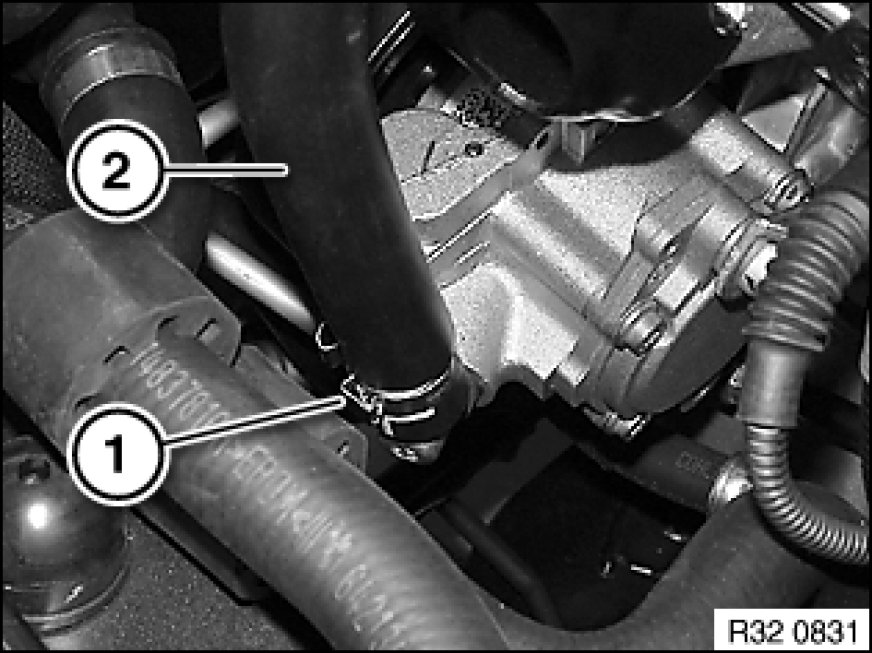
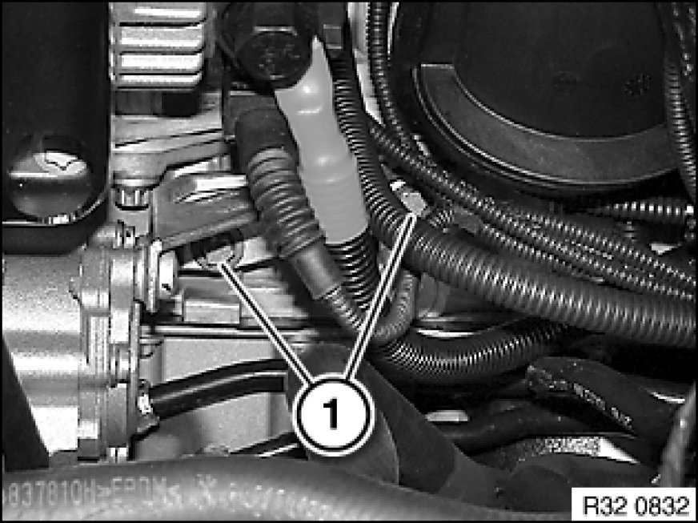
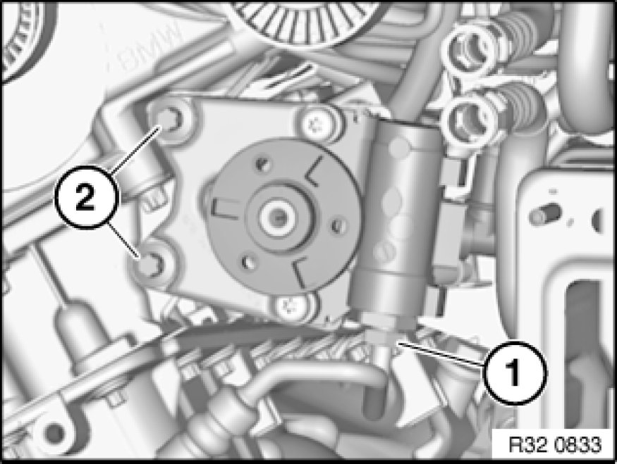

Removing and Installing/Replacing Power Steering Vane Pump (N52)
32 41 060 - Removing and installing/replacing power steering vane pump (N52)

Important!
Aluminium-magnesium materials.
No steel screws/bolts may be used due to the threat of electrochemical corrosion.
A magnesium crankcase requires aluminium screws/bolts exclusively.
Aluminium screws/bolts must be replaced each time they are released.
The end faces of aluminium screws/bolts are painted blue for the purposes of reliable identification.
Jointing torque and angle of rotation must be observed without fail (risk of damage).
Important!
Adhere to the utmost cleanliness. Do not allow any dirt to enter the hydraulic system.
Close off pipe connections with plugs.

Necessary preliminary tasks:
- Draw off and dispose of hydraulic fluid from fluid reservoir
- Remove intake filter housing Service and Repair
- Remove belt pulley Removing and Installing/Replacing Belt Pulley on Vane Pump for Power Steering

Release hose clamp (1) and detach suction line (2) from vane pump.
Installation Note:
Align suction line by way of marking to connection on vane pump.

Release bolts (1).
Installation Note:
Replace aluminium screws.
Observe screwing sequence.

Remove front underbody protection Removing and Installing/Replacing Front Underbody Protection.
Release banjo bolt (1) and disconnect pressure line.
Installation Note:
Replace sealing ring.
Make sure pressure line is laid without tension and with sufficient spacing to adjoining components.
Tightening torque 32 41 3AZ Pump and Oil Supply.
Release screws (2) and remove vane pump towards top.
Installation Note:
Replace aluminium screws.
Observe screwing sequence.
Screw-fastening sequence:
1. Secure vane pump with screws
2. Tighten side screws to 2 Nm
3. Tighten front screws to 2 Nm
4. Tighten down front screws to jointing torque and angle of rotation
Tightening torque 32 41 1AZ Pump and Oil Supply.
5. Release screws at side and check screw fastening points for gap freedom
6. Tighten down side screws to jointing torque and angle of rotation
Tightening torque 32 41 1AZ Pump and Oil Supply.
After installation:
- Fill and bleed hydraulic system Service and Repair
- Check pipe connections for leaks